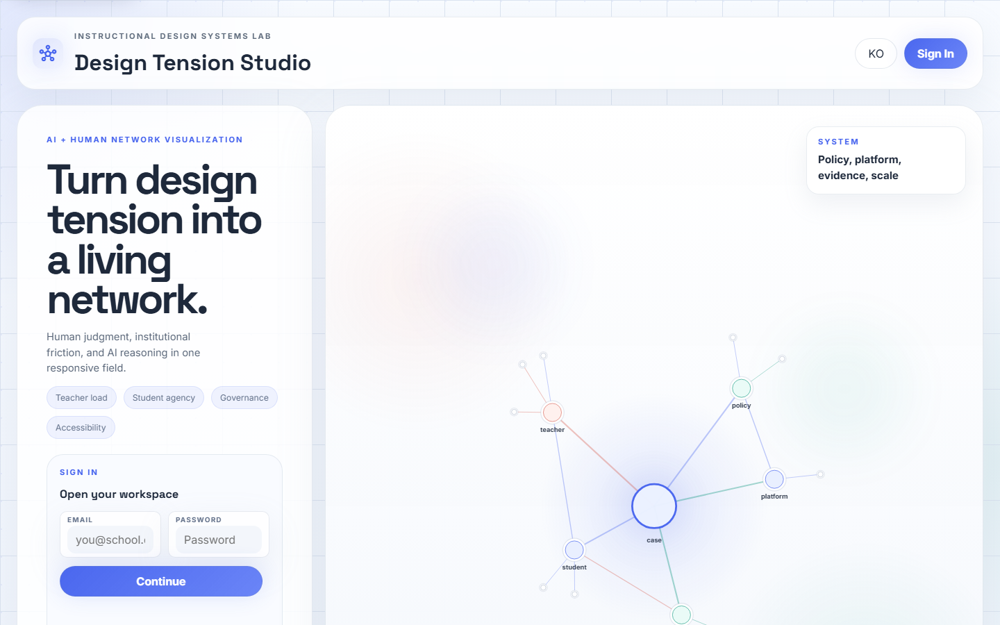
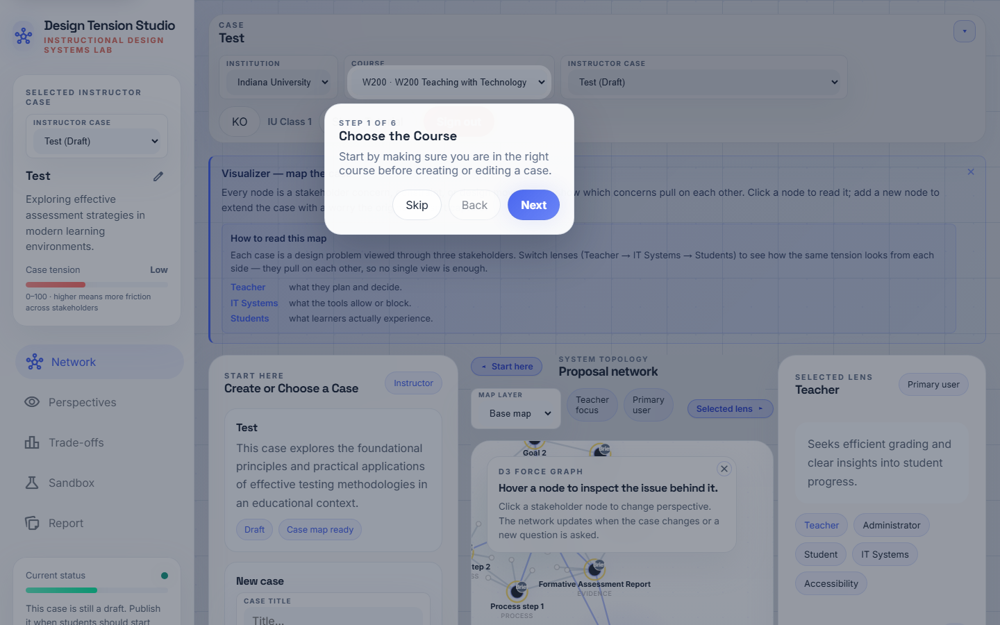
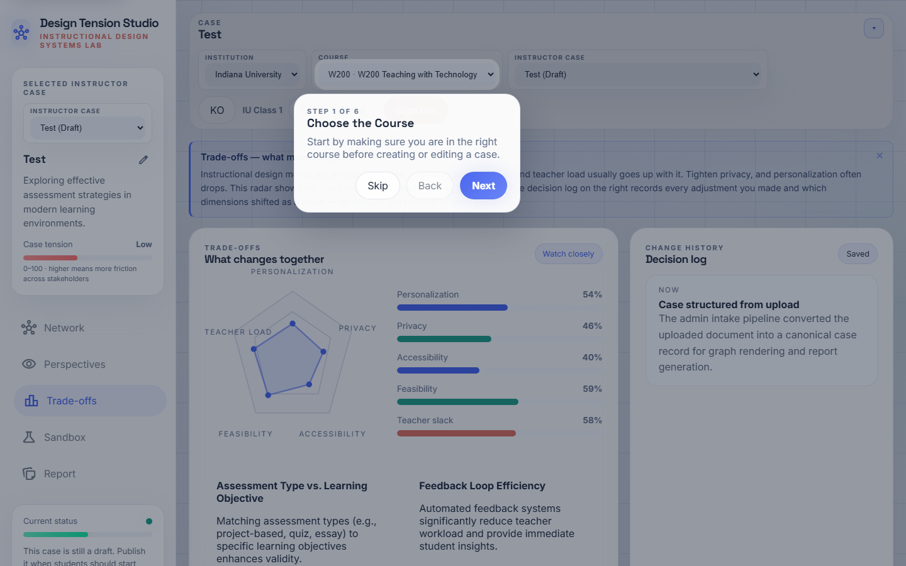
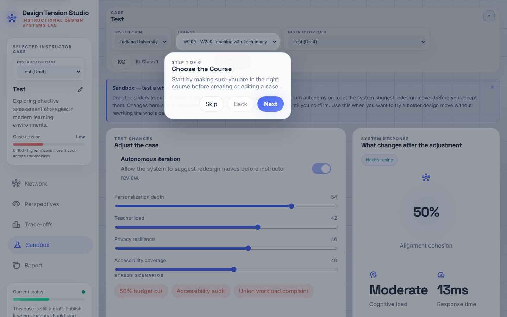
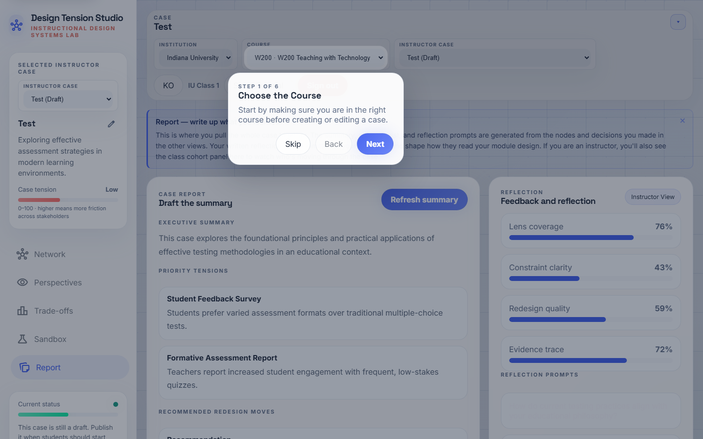

강사 수업 진행 가이드
Swarm ID로 수업 하나를 처음부터 끝까지 운영하는 방법을 단계별로 안내합니다 — 케이스 준비부터, 수업 중 라이브 퍼실리테이션, 세션 뒤 리뷰까지. 각 단계에서 무엇을 해야 하는지, 학생 화면에서 어떻게 보이는지, 그리고 어디서 가장 자주 막히는지를 짚어드립니다.
Swarm ID가 다른 이유
학생이 질문을 하면 Swarm ID는 LLM을 한 번만 부르지 않습니다. 대신 스웜 라운드가 돕니다 — 다섯 명의 이해관계자 에이전트(교사·학생·IT·행정·접근성)가 같은 질문에 동시에 답하고, 2차 분류 패스가 답변 쌍을 동의 / 이견 / 부분일치로 나눠 맵 위에 엣지로 그려 줍니다. 학생은 다원성과 충돌 지점을 한눈에 보게 되고, 어떤 답이 납득이 안 되면 도전(Challenge)을 눌러 그 에이전트에게 2라운드 정교화를 받아냅니다.
강사로서 여러분의 일은 이 스웜이 수업 활동 안에서 의미 있게 돌아가도록 무대를 설계하는 것입니다 — 좋은 설명요약, 신중한 게시 전략, 수업 중에는 개입 포인트를 알아보는 눈, 세션 뒤에는 학생 리포트를 해석하는 안목. 이 가이드가 그 네 가지를 순서대로 잡아드립니다.
FSU 수업 테스트 계정 (프리뷰 세션용)
강사: yujinpark@swarm.io / classfsuyp · 학생 (예시): fsuclass1@swarm.io ~ fsuclass8@swarm.io / classfsu1~classfsu8 · 수업 참여 코드: FSU-YJPARK · 섹션: FSU-A
준비하기 — 로그인, 스튜디오 진입
수업 전에 도구에 문제없이 들어갈 수 있고, 내 수업·케이스 환경이 그대로 있는지를 확인합니다. 5분이면 충분합니다.
-
강사 계정으로 로그인
로그인 화면https://swarmid.vercel.app에 접속해 강사 계정으로 로그인합니다(Supabase 인증). 계정이 아직 없으면 플랫폼 관리자에게 요청하세요 — 자가 가입은 수업 데이터를 기관 내부에 묶어두기 위해 의도적으로 비활성화돼 있습니다.
오른쪽 상단 언어 토글에서 KO로 맞춰 두세요. 모든 UI 문구와 AI 응답 언어가 한국어로 전환됩니다.
내부에서 일어나는 일Supabase에 인증한 뒤 기관·수업 컨텍스트를 불러오고, 최근 케이스와 튜토리얼 진행 상태를
localStorage에서 복원합니다.
로그인 화면 — 이메일/비밀번호 입력 후 KO 토글로 언어를 맞추세요. -
스튜디오에 진입했는지 확인
스튜디오 · 케이스 네트워크 뷰로그인이 끝나면 스튜디오의 케이스 네트워크 뷰로 진입합니다. 왼쪽 사이드바에는 네비게이션(네트워크 · 관점 · 트레이드오프 · 샌드박스 · 리포트)과 현재 상태 건강 패널이, 가운데에는 D3 네트워크 캔버스가, 오른쪽에는 선택된 관점과 AI 협력 활동 피드가 보입니다.
우측 상단 AI 협력 활동 옆의 알약 라벨은
사이클 N · 라운드 M으로 뜹니다.사이클은 그래프 리렌더 횟수,라운드는 실제 다중 에이전트 턴 수입니다. 수업이 끝난 뒤라운드값이 0보다 충분히 커야 학생이 스웜에 실제로 개입했다는 증거입니다.
로그인 직후 들어가는 스튜디오 뷰.
케이스 만들기 — 수업용 설명요약을 구조화
수업에서 쓸 케이스를 확보합니다. 기존 케이스를 재활용하거나, 새 설명요약을 Gemini로 구조화해 케이스를 생성합니다. 설명요약의 품질이 곧 스웜의 품질이라는 점을 기억하세요.
-
기존 케이스 라이브러리 점검
인테이크 패널 · 케이스 목록시작하기(인테이크) 패널을 스크롤해 수업 케이스 목록을 확인하세요. 카드마다 제목·요약·초안/공개 상태·열기/공개 버튼이 보입니다. 공개 태그가 붙은 카드는 학생에게 노출되고, 초안 카드는 강사 전용입니다.
가장 흔한 관리 실수학생이 케이스를 못 찾는 가장 큰 원인은 카드가 초안 상태로 남아 있어서입니다. 카드의 공개 버튼을 한 번만 누르면 해결됩니다.

인테이크 패널의 케이스 목록 — 초안/공개 상태 한눈에 확인. -
수업용 케이스 한 장 열어 예습
카드 · 케이스 열기수업에 사용할 카드(예: Learner Motivation 사례 1)의 케이스 열기를 누르면 캔버스가 재렌더됩니다: 중앙 코어 노드(케이스 제목), 그 둘레의 이해관계자 노드(교사·학생·IT·행정·접근성), 각 이해관계자에 연결된 시그널 노드(목표·제약·증거). 모든 주요 노드에는 오른쪽 위에 출처 배지가 붙습니다 —
설명배지는 업로드된 설명요약에서 나온 노드라는 뜻.수업 전에 강사가 직접 한 번 열어 보세요. 캐시를 데우고, Gemini 쿼터 이슈가 있는지 미리 걸러내는 용도입니다.

케이스 하나를 연 뒤 네트워크가 펼쳐진 모습. -
새 설명요약 업로드 & 구조화
인테이크 · 설명요약 업로드 영역이번 수업에 새 케이스가 필요하면 인테이크 패널의 수업 설명요약을 붙여 넣으세요 텍스트 영역에 설명요약을 넣고 케이스 구조화를 누르세요. 시스템이 Gemini를 호출해 목표·제약·이해관계자·시드 증거를 뽑아낸 뒤 케이스 레코드로 만들고, 목록에 초안 상태로 올려 둡니다.
좋은 설명요약이 담는 요소대상 학습자, 학습 목표(ADDIE/5E 친화적 언어), 제약(시간·도구·정책·워크로드), 최소 한 가지 긴장 지점(예: "저작 정책 vs AI 보조 드래프팅"). 긴장이 많이 인코딩될수록 스웜의 이견 엣지가 풍부해집니다.
피해야 할 설명요약"이 수업은 흥미롭고 학생 참여를 높입니다" 같은 마케팅 문구. 이해관계자·제약이 추출되지 않아 맵이 얇아집니다.

설명요약을 붙여 넣고 케이스 구조화 버튼.
수업 설정 — 보드 설정과 게이트
학생이 들어오기 전에 보드 룰을 정해 둡니다. 이 값들이 수업의 호흡(빠른 탐색 vs 신중한 결정)을 결정합니다. 5분.
-
보드 설정 조정
설정 탭상단 설정을 열어 코호트 보드를 구성하세요. 핵심 노브:
- 학습자 노드 최대 개수 — 학생 한 명이 개인 맵에 올릴 수 있는 노드 상한.
- 노드당 AI 확장 최대 개수 — Gemini가 학생 노드 아래에 자동 생성할 후속 개수 상한.
- 거버넌스 게이트 / 접근성 게이트 — 학생이 결정을 공개하기 전 리뷰 게이트(선택).
기본값은 30명 섹션에 안전합니다. 50분 수업이면 학습자 노드 최대 개수 ≥ 6을 권장하고, 더 짧고 신중한 수업이면 값을 낮추세요.

설정 — 학습자 노드 상한, AI 확장 상한, 게이트.
수업 진행 — 라이브 퍼실리테이션
학생이 스웜을 돌리는 동안 강사가 개입할 지점은 네 곳: 관점 요약으로 맥락 잡기 → 트레이드오프로 체크포인트 → 샌드박스로 "만약에" 실험 → 리포트 윤곽 확인. 30–50분.
-
관점(Perspectives)으로 수업 여는 발문
왼쪽 내비 · 관점학생이 각자 스웜 라운드를 돌리기 전에, 관점 뷰로 전환해 이해관계자별 상위 충돌 요약과 긴장 점수를 훑으세요. 전체 수업에 던질 좋은 첫 발문이 여기서 만들어집니다.
발문 예시"교사 점수가 74이고 학생 점수가 58이라면, 지금 어느 이해관계자가 더 부담을 짊어지고 있고 어떤 제약이 그렇게 만들었을까요?"

관점 뷰 — 이해관계자별 상위 충돌과 긴장 점수. -
트레이드오프로 중간 체크포인트
왼쪽 내비 · 트레이드오프트레이드오프 뷰는 레이더(개인화 / 프라이버시 / 접근성 / 실현가능성 / 교사 여유)와 바 차트를 보여 줍니다. 매트릭스 상태 라벨이 주의 필요 / 경계 / 균형 중 하나로 표시됩니다.
활동 단계 사이의 메타인지 프롬프트로 활용하세요: "지금 어디서 충돌이 튀어오르고 있고, 그게 어느 이해관계자의 압력인가요?"

트레이드오프 — 레이더와 매트릭스 상태 라벨. -
샌드박스로 "만약에" 실험
왼쪽 내비 · 샌드박스샌드박스에서 사전 정의된 시나리오(예산 50% 삭감 · 접근성 강제 · 워크로드 압박)를 적용해 지표가 어떻게 재분배되는지 관찰할 수 있습니다. 자율 반복을 켜면 시스템이 안정 상태에 이를 때까지 충돌을 셔플합니다.
"만약에" 연습에 가장 적합합니다. 시나리오 적용 전에 학생에게 예측을 쓰게 한 뒤 공개 → 실제 결과와 비교하며 토의하는 순서가 효과적입니다.

샌드박스 — 시나리오 적용 후 지표 재분배.
되돌아보기 — 리포트와 내보내기
수업이 끝난 뒤 AI 협력 활동 카운터를 확인하고 리포트를 내보냅니다. 이게 다음 수업 설계의 근거가 됩니다. 10분.
-
리포트 확인 & 내보내기
왼쪽 내비 · 리포트리포트는 결정·증거·메모를 하나의 공유 가능한 요약으로 조립합니다. PNG 다운로드는 슬라이드용 네트워크 이미지, HTML 다운로드는 학생이 간직할 수 있는 독립형 스냅샷입니다.
활발한 참여의 신호30명 섹션에서
라운드카운터가 30 이상이라면 학생 대부분이 스웜을 실제로 돌렸다는 뜻. 학생 개인 노드도 평균 2–3개씩 붙어 있으면 개인 레이어까지 작동한 겁니다.개입이 필요한 신호라운드가 5 미만이거나 `AI` 배지만 가득하고 `나` 배지가 거의 없다면 다음 수업엔 더 명시적인 프롬프팅, 짝 토의, 또는 스웜 라운드 시연이 필요합니다.
리포트 — 결정·증거·메모가 한 문서로 조립됩니다.
수업 직전 프리플라이트 (5분 체크)
- 모든 수업용 케이스 카드가 "공개" 상태. 초안으로 남아 있으면 학생이 못 봅니다.
- 보드 설정 완료. 50분 수업이면 학습자 노드 최대 개수 ≥ 6.
- 본인 계정으로 케이스를 최소 한 번 열어 예습. 캐시 워밍 + Gemini 쿼터 이슈 선검출.
- 프로젝터/화면 공유 창을 네트워크 뷰로. 시연 시 좌우 패널을 쉐브론으로 접으면 맵이 캔버스를 꽉 채웁니다.
- 학생 가이드를 미리 훑기. 학생이 보게 될 화면과 용어를 정확히 기억해 둡니다.
문제 해결 (자주 나오는 증상)
- 학생이 케이스를 못 봄. 초안 상태 — 카드의 공개를 누르세요.
- 질문했는데 네트워크가 그대로. 학생이 제출 안 했거나 Gemini 키 미설정 — Vercel의
/api/gemini로그 확인. - 이견 엣지가 전혀 안 보임. 2차 Gemini 패스가 조용히 실패 — 콘솔에서
classifySwarmEdges경고 확인. - UI에 한/영이 섞임. 렌더 중 로케일 전환 — 로케일 버튼을 두 번 눌러 전체 리렌더 강제.
- 왼쪽 사이드바 내용 잘림. 뷰포트 높이 부족 — 사이드바는 독립 스크롤이니 내부 콘텐츠를 드래그.